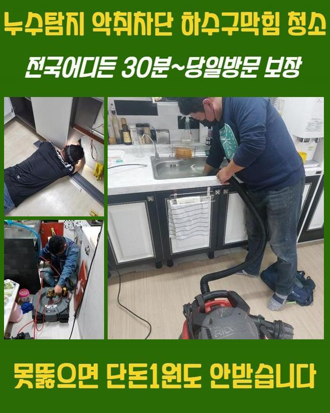
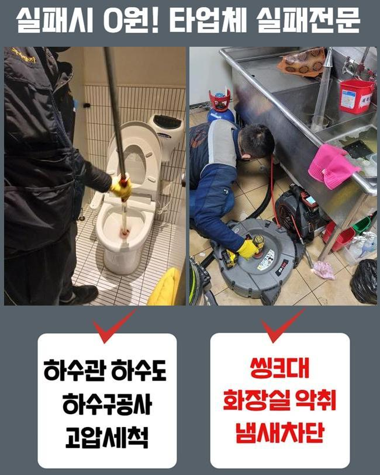
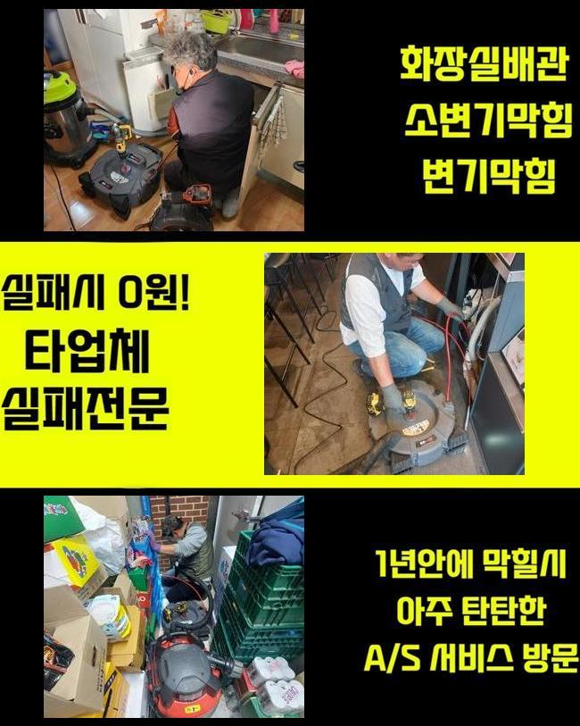
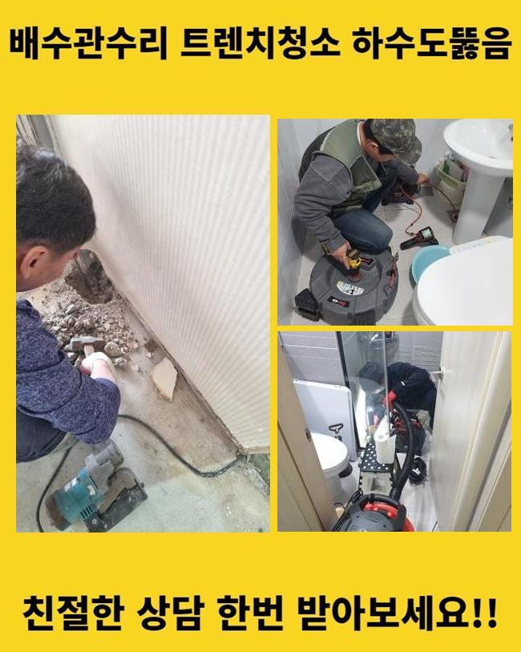
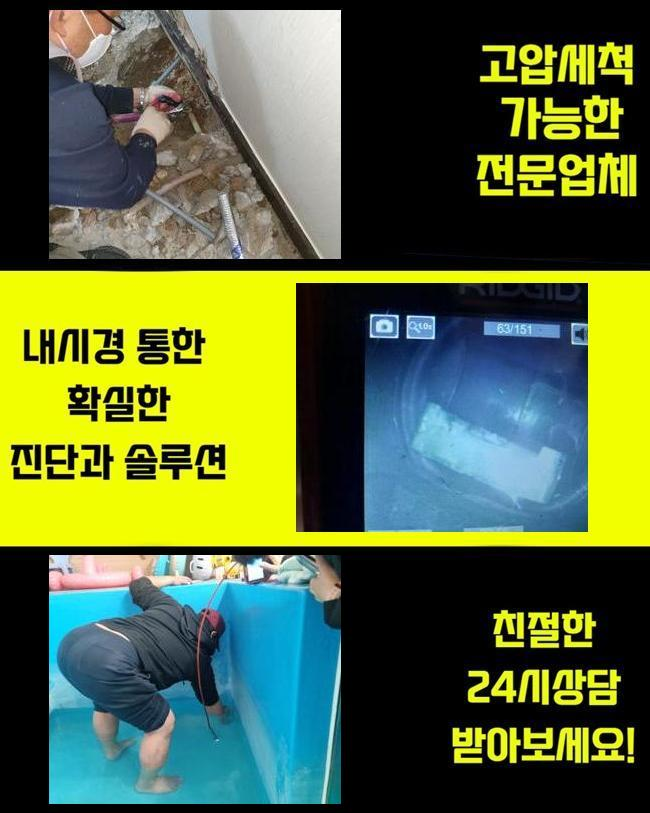
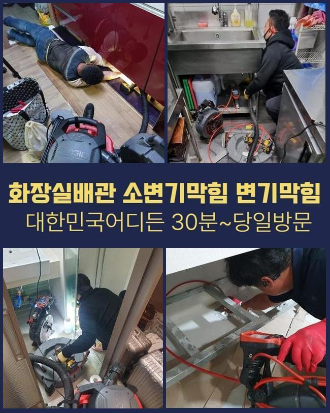
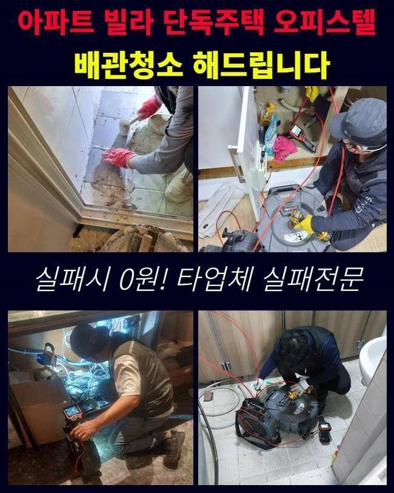

🏠 과림동세탁기배수구막힘 거모동 하수구뚫는곳 배관전문
용인 하수구막힘 전문 시공 후기

📋 작업 개요
- 위치: 용인
- 서비스 유형: 하수구막힘, 배관막힘, 역류해결, 뚫는업체, 배관청소, 고압세척, 악취차단
- 작업 일시: 2025. 1. 26. 14:58
- 업체명: 하수구수사대 (010-5615-2118)
🔍 문제 상황
과림동세탁기배수구막힘 거모동 하수구뚫는곳 배관전문
복합적인 상가에서 하수구의 고장이 나타났다는 것을 듣고 얼른 개선을 해드리려고 작업지로 향했습니다
단층 세대가 아니라면 내부 장소마다 설치된 파이프들이 결국 모이게 되는 모습을 갖추고 있는 현장들이 대부분인데요
낱개의 한 배관에서 결함이 탄생했다고 해도 빠르게 막힘이 전이돼서 많은 사용자분들이 곤란함을 느낄 때도 많습니다
오늘 이야기할 하수구 설치장소는 여러 상가들이 성업 중인 상가였는데 예기치 않게 하수구 중단 이슈가 터져서 여러 매장들이 장사를 못해서 당장의 비용적인 리스크도 앓고 계셨습니다
이렇게 거대한 건물에서 하수구 이슈가 거듭 터진다면 세입자나 건물주 모두에게 어려움을 낳을 수 있는 부분이므로 서둘러 행동하여 스케줄에 맞춰 해당 장소로 갑니다
도착 후에는 손상이 두드러지는 곳부터 우선 방문하여 유속이 얼마나 느려졌는지 확인해봐요
통수검사의 경우는 수돗물을 세게 틀어보고 관로 속으로 내려보낸 물이 막히지 않고 흘러가는지 측정하여 막힘 정도를 파악합니다
아래로 향하는 물의 유속이 느릿느릿해진 게 분명했고 툭툭 멈추는 현상이 빚어지는 중이라는 점을 몸소 깨닫게 되었습니다
막힘으로 인한 여러 증세가 야기됐다는 점은 배관의 내부 통로에 수많은 오물이 누적되어 있을 확률이 매우 유력합니다

🔎 원인 분석
💡 전문가 진단: 정밀 진단 장비를 사용하여 슬러지의 고착 여부를 판명하고 타격/세척 작업을 실시했습니다.
덩어리화가 된 찌꺼기들을 싹 수습해내지 못할 경우는 근방의 배관들까지 오염이 옮겨져 갈 위험이 있으니 시간을 최대한 단축시키려 노력했습니다
하수시설이 중단되게 하는 뿌리는 배수로 곳곳에 누적된 오염물질이기 때문에 남김 없이 청소를 해나가야 말끔해집니다
고객님들이 평범하게 물을 쓰실 때마다 어느정도의 찌꺼기들은 형성되는데 물 속에 섞어들어서 폐기가 되는 과정에서 일정한 섹션에 쌓이게돼서 심각한 장애물으로 전락합니다
의도적으로 고형화된 물질들을 배출하지 않아도 수돗물 안의 석회질과 미네랄 등이 고체가 될 수 있습니다
카메라로 속을 들여다 보니 기름기와 모발과 같은 견고한 성질의 물에 안 녹는 것들이 자리하고 있었는데요
이렇게 똘똘 뭉쳐있다가 심지어 밀집도도 높아진다면 제거하기가 더욱 난감합니다
물길을 저해하는 상황이라면 밑에 고여있던 오염수의 역류도 불가피하게 일어날 수 있는 상태까지도 악화될 수 있습니다
축축한 습기에 닿는다면 오염원이 급속도로 부패할 환경을 조성하는 것과 같은데 이 물질이 풍겨대는 냄새가 같이 올라와서 생활이 더욱 까다로워집니다
보통 하수가 이동하는 배관은 습도가 매우 높게 유지되니 위생도 더 나빠지는데다 하수구냄새까지 만듭니다
오염원인들이 이미 접착된 곳들이 여러 곳일 때가 있으니 총 문제점들을 발본색원해줘야 합니다
단순하게 한 포인트만 문제라면 석션장치만 가동시키더라도 물꼬를 틔울 수 있습니다

🔧 작업 과정
틈새가 많은 모양새이거나 관로가 복잡하게 이어져있다면 물살이 방해받는 구간들이 은근 많다고 느껴질 것입니다
파이프라인 자체의 형태와 오염된 곳이 얼마나 넓은지 사전 조사를 해줘야 합니다
물을 한순간에 내려보내도 뚫리는 기색이 없다면 오물이 너무 커졌다거나 단단해졌을 수 있어요
이와같은 심한 막힘을 해결해 내기 위해서는 통수를 끊기게 한 대상을 표적하여 탈거해주고 정리정돈해야 합니다
장기간 누적된 침전물의 세기같은 실제 모습을 잘 알아야 시공 단계를 구상할 수 있어요
배관에 넣는 내시경은 어둑하고 칙칙한 관로를 수수께끼였던 관로 상태를 확인하게 해주는 활용도가 좋은 관측장치로 노폐물의 특성과 크기를 비교적 자세히 알 수있게 해줍니다
카메라를 중간중간 주입해서 현재진행도를 살펴보면 그밖의 문제점들은 없는지 신중함을 기할 수 있어서 하자나 재발을 줄일 수 있겠죠
청소에 앞서서 배관의 모양을 가늠하기 위해서 혹은 끝날 때 청소가 잘 됐는지 다시금 체크하기 위한 용도로 카메라를 쓰고 있습니다
관로 전반을 검토해보았더니 물길이 모이게 되는 메인배관 포함 인근의 섹션까지 오염원이 밀착된 상태라는 것을 직접 관측할 수 있었는데요
실내배관이라면 전동모터의 파워를 소지한 단단한 와이어 스프링이나 플렉스샤프트를 접목해서 이물질을 자잘하게 절단시켜서 문제를 해소해 줄 수 있습니다
야외 배관과의 연결점에 길게 펼쳐진 영역에 오염원이 자리를 잡았으면 중소형 장비로는 효과를 기대할 수는 없습니다
광활한 배수로이므로 달라붙은 쌓이는 양도 많을 수 밖에 없으니 소박한 석션으로는 외부배관은 턱도 없을 수 있습니다
대형 배관을 처리할 때는 고압의 물줄기를 분사하는 배관 고압세척장치를 쓰는 방향을 고려해야 합니다
고압의 물을 쏘는 기기로 배관의 들어가기 쉬운 크기의 노즐을 장착하여 물을 발사하는 원리인데 딱딱하게 굳어버린 장애요소라도 갈갈이 찢어줍니다
설치된 배관들은 보통 생각보다 강하지 못해서 하자를 야기하지 않을 사용법을 신중하게 결정하고 있습니다
하수구를 타격하기 전에 배수로의 결함과 취약점에 대해서도 예리하게 보고서 본 시공에 들어갑니다
출수되는 세기를 변화시키면서 거듭 배관의 세척을 담당해드리면서 답답하게 통로를 차단하는 중이었던 침전물을 흔적도 없이 덜어낼 수 있었어요


✅ 작업 완료
둥둥 떠다니던 소규모의 찌꺼기도 잔여분량이 남아있지 않은지 체크를 하면 성능을 완전 복구할 수 있습니다
하수가 잘 방출되는지 배수테스트도 빠지지 않고 실행하고서 질의사항이 있다면 놓치지 않고 이해되도록 알려드려요!
악취가 사라졌는지도 맡아보고 물 방출이 제대로 됐는지를 더블체크를 놓치지 않습니다
여러 기능의 장치들을 복합적으로 쓰며 높은 만족도를 얻으시도록 하수구의 불능 사태를 능숙하게 해결해 나갑니다
하수 전반에 대한 궁금한 점이 있으시더라도 연락을 편하게 걸어주세요




⚠️ 하수구 배관 막힘 예방 및 관리 가이드
- ✅ 머리카락, 비닐, 물티슈 등 물에 분해되지 않는 이물질은 하수구 유입을 절대 금지해 주세요.
- ✅ 하수구 거름망을 씌우고 모여진 이물질은 주기적으로 쓰레기통에 바로 비워주셔야 합니다.
- ✅ 배관 노후가 심할 경우 이물질이 더 쉽게 걸리므로 주기적인 배관 세척(고압세척 등)을 권장합니다.
- ✅ 작업 후 1년 이내 재발 시 하수구수사대에서 무상 A/S 보증 서비스를 제공합니다.
💡 핵심 정리
- 확실한 장비 작업(내시경 점검 및 샤프트 스케일링)으로 원인을 뿌리 뽑습니다.
- 작업 후 1년 이내에 동일한 부위 재발 시 100% 무상 A/S 서비스를 보장합니다.
- 서울 · 경기 · 인천 전 지역에 24시간 언제든 긴급 출동할 수 있도록 항시 대기 중입니다.
❓ 자주 묻는 질문 (FAQ)
🚨 용인 하수구막힘 문제로 고민이신가요?
정확한 원인 진단과 확실한 시공으로 재발 없는 해결을 약속드립니다.
24시간 긴급 출동 | 서울 · 경기 · 인천 전지역 | 1년 내 재발 시 무상 A/S